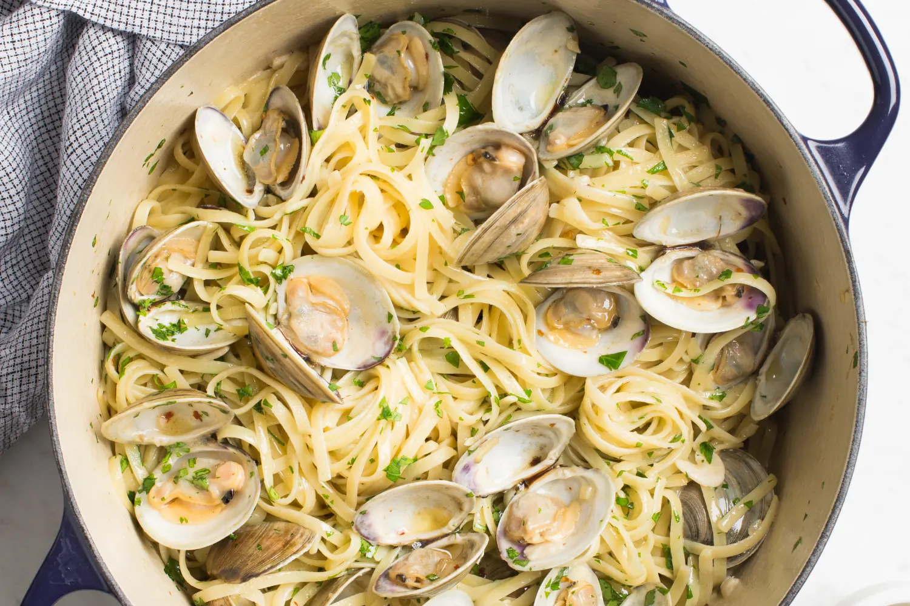

Linguine Vongole

Description
This is one of my favorite Italian recpies! It has tons of flavor and is incredibly simple to make. No chops in the kitchen neccessary.
Ingredients
Clams
Linguine
Lemon
Olive Oil
White Wine
Red Pepper Flakes
Lots of Garlic
Steps
Boil pasta for 5 mins or until al dente.
Heat large pan on med heat
Add garlic and red pepper flakes to pan and cook until fragrant
Add white wine and bring to a boil
Once boiling add clams and reduce to a simmer, cook for 20 minutes or until clams open.
Remove clams from pan and set aside
Add cooked noodles to sauce, add lemons and stir
Finally add clams and serve immediately with an empty bowl to discard empty clam shells. VIOLA!